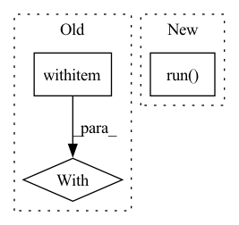

Pattern ID :10043
Before Change
for (inst,pitch) in notes:
midi.note_on(note=pitch, velocity=0, channel=noto_map.inv(inst))
with Live(layout, refresh_per_second=10, screen=True):
while True:
time.sleep(1e-2)
After Change
midi.note_off(note=pitch, velocity=0, channel=noto_map.inv(inst))
notes.clear()
ui.run()
if __name__=="__main__":
run(main)In pattern: SUPERPATTERN
Frequency: 8
Non-data size: 3
Instances Fragment ID: 35730800
Project Name: intelligent-instruments-lab/iil-python-tools
Commit Name: 4be59683d3fc714818eefd7d88c66ca121888a6e
Time: 2023-02-06
Author: victor.shepardson@gmail.com
File Name: notochord/notochord/improviser.py
M Class Name: AnonimousClass
N Class Name: AnonimousClass
M Method Name: main(6)
N Method Name: main(6)
M Parent Class:
N Parent Class:
M File Name: notochord/notochord/improviser.py
N File Name: notochord/notochord/improviser.py
M Start Line: 33
M End Line: 209
N Start Line: 92
N End Line: 286
Before Change
f"Dolphin {self.id_} completed running task {task.name}-{task.id_}.")
// save/update the results
with self.lock:
save_function = self.results_store.update_results if task.force else self.results_store.save_results
save_function(task_name=task.name,
unique_config=task.unique_config, results=results)
After Change
if isinstance(task, MyTask):
task.run(results=pred_results)
else:
task.run(**pred_results)
Console.get_instance().log(
f"Dolphin {self.id_} completed running task {task.name}-{task.id_}.")
// take results from results store and continue Fragment ID: 35730791
Project Name: fluidml/fluidml
Commit Name: dc5329504a4ff097961daa8bb00c300878b12d79
Time: 2021-01-04
Author: larshillebrand@icloud.com
File Name: fluidml/swarm/dolphin.py
M Class Name: Dolphin
N Class Name: Dolphin
M Method Name: _run_task(3)
N Method Name: _run_task(3)
M Parent Class: Whale
N Parent Class: Whale
M File Name: fluidml/swarm/dolphin.py
N File Name: fluidml/swarm/dolphin.py
M Start Line: 66
M End Line: 77
N Start Line: 51
N End Line: 62
Before Change
logging.info(f"Using hyperparameters: {env.hparams}")
logging.debug(f"Using a test experiment config: {env.experiment_config}")
with local_execution_manager(context_path):
if not trial_class:
logging.debug("Loading trial class from experiment configuration")
trial_class = load.load_trial_implementation(env.experiment_config["entrypoint"])
After Change
rendezvous_info=rendezvous_info,
hvd_config=hvd_config,
)
controller.run()
checkpoint_dir.cleanup()
logging.info(
"Note: to submit an experiment to the cluster, change mode argument to Mode.CLUSTER"
) Fragment ID: 35730790
Project Name: determined-ai/determined
Commit Name: 03270c0aafa01876b93c31eeb61b052807608307
Time: 2020-05-15
Author: shiyuan@determined.ai
File Name: harness/determined/experimental/_native.py
M Class Name: AnonimousClass
N Class Name: AnonimousClass
M Method Name: test_one_batch(4)
N Method Name: test_one_batch(3)
M Parent Class:
N Parent Class:
M File Name: harness/determined/experimental/_native.py
N File Name: harness/determined/experimental/_native.py
M Start Line: 432
M End Line: 466
N Start Line: 325
N End Line: 387
Before Change
preprocessed_deprioritize_text = embedding_model.preprocess(deprioritize_text)
embedding_deprioritize = embedding_model.embed(preprocessed_deprioritize_text)
with timer("sentences_conditioning"):
restricted_sentence_ids = filter_sentences(connection,
has_journal=has_journal,
date_range=date_range,
exclusion_text=exclusion_text)After Change
with timer("sentences_filtering"):
logger.info("Applying sentence filtering")
restricted_sentence_ids = (
SentenceFilter(connection)
.only_with_journal(has_journal)
.restrict_sentences_ids_to(indices)
.date_range(date_range)
.exclude_strings(exclusion_text.split())
.run()
)
with timer("considered_embeddings_lookup"):
logger.info("Constructing mask based on indices and sentence filtering")
mask = np.isin(indices, restricted_sentence_ids) Fragment ID: 35730793
Project Name: bluebrain/search
Commit Name: 6dbc2fe8f01adb39650da97fb8473111884cd0c1
Time: 2020-08-04
Author: francesco.casalegno@gmail.com
File Name: src/bbsearch/search.py
M Class Name: AnonimousClass
N Class Name: AnonimousClass
M Method Name: run_search(12)
N Method Name: run_search(12)
M Parent Class:
N Parent Class:
M File Name: src/bbsearch/search.py
N File Name: src/bbsearch/search.py
M Start Line: 210
M End Line: 221
N Start Line: 170
N End Line: 241
Before Change
passwd_prompt = f"Password for user "{creds.username}":"
unauth_error = r".*Forbidden\(user not active\)"
with logged_in_user(ADMIN_CREDENTIALS):
child = det_spawn(["user", "deactivate", creds.username])
child.wait()
assert child.exitstatus == 0
After Change
passwd_prompt = f"Password for user "{creds.username}":"
unauth_error = "user is not active"
command = ["det", "-m", conf.make_master_url(), "user", "deactivate", creds.username]
subprocess.run( command, check=True)
child = det_spawn(["user", "login", creds.username])
child.setecho(True)
child.expect(passwd_prompt, timeout=EXPECT_TIMEOUT) Fragment ID: 35730795
Project Name: determined-ai/determined
Commit Name: b279bb5b0e81336ff0be03a3307133fe52a1450b
Time: 2022-11-17
Author: nikita.rajaneesh@hpe.com
File Name: e2e_tests/tests/cluster/test_users.py
M Class Name: AnonimousClass
N Class Name: AnonimousClass
M Method Name: test_login_as_non_active_user(2)
N Method Name: test_login_as_non_active_user(1)
M Parent Class:
N Parent Class:
M File Name: e2e_tests/tests/cluster/test_users.py
N File Name: e2e_tests/tests/cluster/test_users.py
M Start Line: 463
M End Line: 479
N Start Line: 506
N End Line: 518
Before Change
AimetLogger.set_level_for_all_areas(logging.INFO)
graph = tf.Graph()
with graph.as_default():
_ = MobileNet(weights=None, input_shape=(224, 224, 3))
init = tf.compat.v1.global_variables_initializer()
// Grow GPU memory as needed at the cost of fragmentation.After Change
_ = update_keras_bn_ops_trainable_flag(model, False, "./t")
sess = tf.compat.v1.keras.backend.get_session()
init = tf.compat.v1.global_variables_initializer()
sess.run( init)
// Grow GPU memory as needed at the cost of fragmentation.
config = tf.compat.v1.ConfigProto()
config.gpu_options.allow_growth = True // pylint: disable=no-member Fragment ID: 35730794
Project Name: quic/aimet
Commit Name: 9d244606591021e305004bc44d72def066b3952e
Time: 2022-02-10
Author: quic_ssiddego@quicinc.com
File Name: NightlyTests/tensorflow/test_compress_example_tf.py
M Class Name: ChannelPruningAcceptanceTests
N Class Name: ChannelPruningAcceptanceTests
M Method Name: test_channel_pruning_auto_mobilenetv1(1)
N Method Name: test_channel_pruning_auto_mobilenetv1(1)
M Parent Class: unittest.TestCase
N Parent Class: unittest.TestCase
M File Name: NightlyTests/tensorflow/test_compress_example_tf.py
N File Name: NightlyTests/tensorflow/test_compress_example_tf.py
M Start Line: 613
M End Line: 621
N Start Line: 615
N End Line: 626
Before Change
x = ensure_array(x).squeeze(0)
y = ensure_array(y).squeeze(0)
with napari.gui_qt():
v = napari.Viewer()
v.add_image(x)
v.add_image(y)
After Change
v.add_labels(y.astype("uint32"))
else:
v.add_image(y)
napari.run()
Fragment ID: 35730797
Project Name: constantinpape/torch-em
Commit Name: 1967fbd3eddd9fbc900dd89e1ecd0dc7c4296091
Time: 2021-09-14
Author: c.pape@gmx.net
File Name: torch_em/util/debug.py
M Class Name: AnonimousClass
N Class Name: AnonimousClass
M Method Name: check_loader(3)
N Method Name: check_loader(2)
M Parent Class:
N Parent Class:
M File Name: torch_em/util/debug.py
N File Name: torch_em/util/debug.py
M Start Line: 12
M End Line: 15
N Start Line: 5
N End Line: 19
Before Change
def test_surface_native_error():
cmd = ["python3", utils.fixtures_path("tf_keras_runtime_error.py")]
with subprocess.Popen(cmd, stderr=subprocess.PIPE) as p:
err = p.stderr.read()
assert p.wait() != 0
if tf.executing_eagerly():
assert (After Change
trial_seed=0,
)
with pytest.raises(ValueError, match="incompatible"):
controller.run()
Fragment ID: 35730799
Project Name: determined-ai/determined
Commit Name: e7f3289627bda514dc6e70183def0a8ee282f327
Time: 2022-05-03
Author: rb@hpe.com
File Name: harness/tests/experiment/keras/test_tf_keras_trial.py
M Class Name: AnonimousClass
N Class Name: AnonimousClass
M Method Name: test_surface_native_error(0)
N Method Name: test_surface_native_error(0)
M Parent Class:
N Parent Class:
M File Name: harness/tests/experiment/keras/test_tf_keras_trial.py
N File Name: harness/tests/experiment/keras/test_tf_keras_trial.py
M Start Line: 373
M End Line: 390
N Start Line: 379
N End Line: 386